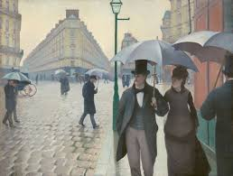
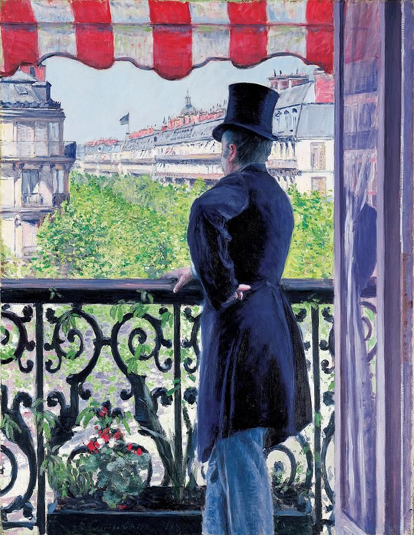

Gustave Caillebotte nació en Paris 1848 y falleció en Gennevilliers 1894 de un derrame cerebral.
La familia de Gustave Caillebotte vivía en el prestigioso Faubourg – Saint Denis, era una familia de la
clase
alta de Paris.
Su padre era el heredero del negocio familiar, una empresa textil dedicada a productos militares,
era también
Juez del Tribunal de Comercio del Distrito del Sena.
Gustave Caillebotte fue hijo de la tercera esposa de su padre, había enviudado de las dos anteriores .
En 1860 se sabe que la familia de Gustave Caillebotte adquirió una gran finca de recreo en la villa de
Yerres a unos 20 kilómetros de Paris, en aquellas fechas nuestro hombre tendría unos 12 años y se supone
que en aquel entorno empezó sus primeros dibujos y pinturas.

Estudia leyes y en 1870 pone ya su bufete de abogado, también ha estudiado ingeniería, pero en ese año
la guerra Franco–Prusiana estalla y nuestro hombre pasa a ser miembro de la Guardia Nacional Móvil del
Sena. (En principio un puesto tranquilo, pero después la cosa se complicó).
Después de la guerra Gustave Caillebotte empieza a interesarse formalmente por las artes, comienza a
visitar el estudio del pintor Bonnard y él mismo empieza a pintar con una cierta seriedad y dedicación.
Llega a entrar en la Escuela de Bellas Artes, pero como a muchos de nuestros personajes, le aburre y
no está demasiado tiempo allí.
En 1874 muere su padre y él hereda la fortuna familiar por ser el hermano mayor y a la muerte de su
madre en 1878, la reparte con sus dos hermanos (Rene y Martial) pero aun así su fortuna personal es
muy importante.
En estos tiempos Caillebotte ha conocido a numerosos pintores entre ellos a Degas y Monet, con quien
traba una gran amistad, conociendo el nuevo rumbo que está tomando la pintura a partir de las
experiencias de nuevas técnicas.
Ya es un pintor consolidado.
En 1876 presenta ocho cuadros en una exposición conjunta de artistas impresionistas, exposición
patrocinada y subvencionada por él mismo, entre ellos “Los cepilladores de parquet”, obra que
fue rechazada en el salón del año anterior tachándola de “vulgar”, ya que se consideraba que los
únicos trabajadores pictóricamente aceptables podían ser campesinos o similares, por cierto estos
cepilladores parece ser que eran los que estaban arreglando el suelo de su propio estudio, existen
bocetos y otros cuadros con este mismo motivo.
Pero no obstante su trazo y técnica fueron del agrado de los críticos del Salón de Paris, que
le auguraron un buen futuro como pintor cuando eligiera mejor los temas, esto parece que no
gustó nuestro hombre que hizo lo posible por eliminar ciertos tecnicismos en su pintura y
alejarse de la pintura clásica y empezar a tener veleidades impresionistas.

La pintura de Caillebotte puede incluirse en la llamada pintura realista, cuyos primeros maestros fueron Millet y
Courbet, es una pintura la suya con un gran sentido fotográfico, tanto por su composición como por su encuadre,
son visiones fotográficas de la realidad cotidiana, así sus pinturas sobre el nuevo puente Europa que le atrae
poderosamente como ingeniero, o las vista sobre Paris y el boulevard Haussmann.
Sus pinturas reflejan su admiración por el nuevo París, en su obra «Paris bajo la lluvia» ademas del magnifico
tratamiento de la lluvia y el agua en el suelo entre los adoquines lo que nos está mostrando son los nuevos
edificios, las magnificas avenidas y las amplias dimensiones de las nuevas calles.
Pero también aborda otros temas y nos ofrece un magnifico cuadro sobre una partida de cartas, o un excelente
retrato de familia en el jardín, o de una dama arreglándose ante el espejo y también temas florales con alegres
jardines, en su faceta más impresionista.
Pero además de ser un excelente pintor, algunos no lo reconocen como impresionista por su pintura excesivamente
realista, quizás más próxima a la de Manet o Degas, Caillebotte fue el mecenas de los impresionistas, ayudándoles
economicamente, apoyándoles y comprándoles sus cuadros cuando estaban en estado de necesidad, incluso financiando
exposiciones a favor de sus amigos.
A su muerte donó casi 70 cuadros de estos amigos al estado francés con la condición de que fueran expuestos en
el Louvre o en el Luxemburgo, lo cual fue inicialmente rechazado, en aquella época estaba en plena ebullición la
lucha entre los academicistas y las nuevas tendencias pictóricas, pero finalmente, tras arduas negociaciones por
parte de Renoir, nombrado albacea de Caillebotte, 38 de esas pinturas son expuestas en el Luxemburgo, siendo la
primera vez que se exponen oficialmente obras de autores impresionistas, las veintitantas restantes son finalmente
reclamadas por la viuda de un hermano de Gustave Caillebotte y acaban vendiéndose de forma particular.